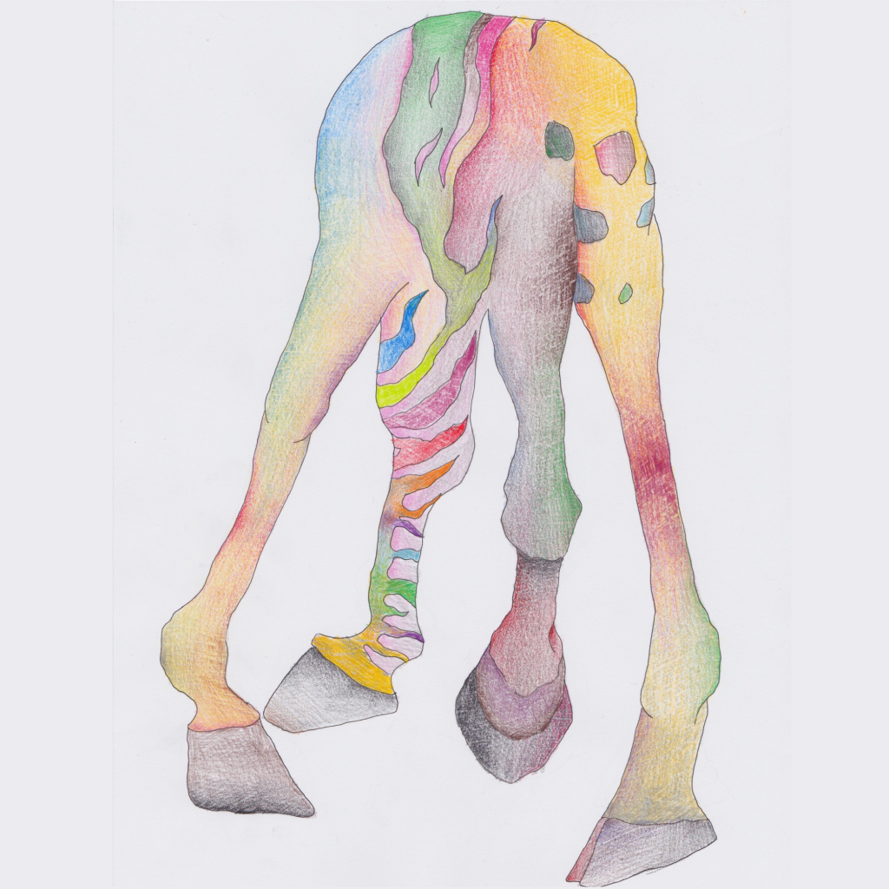
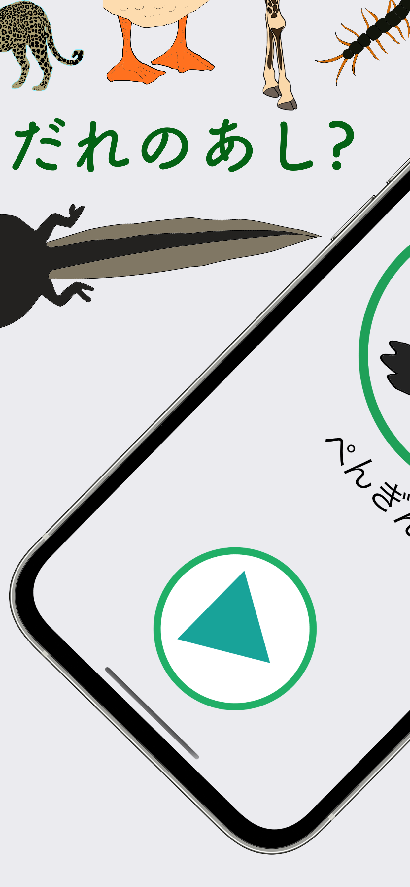
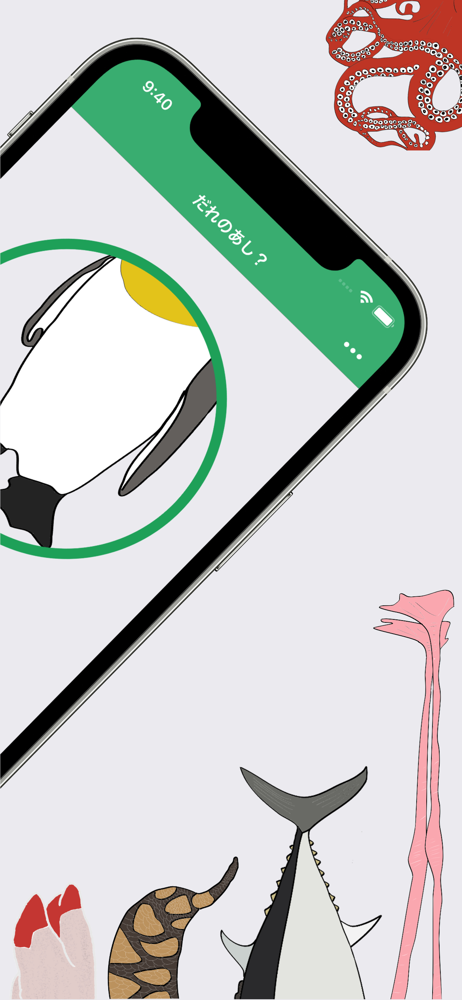

アプリについて

「だれのあし」は、いろんな動物の足を見て、その動物が何かを当てる脳トレクイズアプリです。
足の特徴から動物を推理するシンプルなゲームで、お子様から大人まで家族みんなで楽しめます。全問正解を目指して、謎を解き明かしましょう！
アプリの機能
シンプルな操作で、すぐにクイズゲームを始められます。


お問い合わせ
アプリに関するご意見・ご要望、不具合のご報告など、お気軽にお問い合わせください。
プライバシーポリシー
「だれのあし」は、ユーザーのプライバシーを尊重します。
本アプリは、個人を特定できる情報を一切収集しません。詳細については、以下をご確認ください。